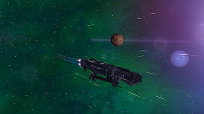
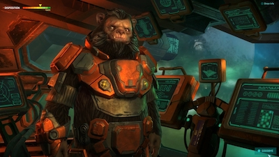
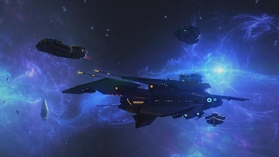

Во что поиграть в День космонавтики. Лучшие игры о космосе
Покорение космоса будоражило умы и сердца во второй половине прошлого века. Но сегодня далеко не каждый малыш в детском саду заявит, что собирается стать космонавтом. Тем не менее одного взгляда на современную массовую культуру хватит, чтобы понять: звезды по-прежнему манят. Игровые разработчики обращаются к космической тематике регулярно, количество незаурядных проектов очень велико. Мы — по понятным причинам — не можем рассказать вам о всех, но те игры, о которых пойдет речь — это настоящий космос.
Начнем с истории. Видеоигры по-настоящему вырвались в космос в далеком 1984-м. Тогда британские студенты Дэвид Брэбен и Иэн Белл выпустили для компьютера BBC Micro легендарную Elite. Вскоре игра появилась на большинстве актуальных платформ, включая популярный в Союзе ZX Spectrum. Ничего подобного поклонники цифровых развлечений прежде не видели. Во времена простейших аркад и монструозных автоматов «Морской бой» из парка отдыха они получили (почти) настоящий космический корабль, необъятную галактику и пьянящую свободу. Elite мигом завоевала культовый статус. Обилие возможностей вышибало почву из-под ног неподготовленных геймеров восьмидесятых и начала девяностых. Торговля, пиратство, охота за головами, гиперпрыжки по вселенной и оснащение корабля массой полезных агрегатов — игроки буквально жили в мире Elite. Покупка пульсирующего лазера взамен старой пушки давала ядерный заряд позитива, стыковка с орбитальной станцией становилась настоящим приключением. А каркасная 3D-графика показывала просто невероятные в те годы космические корабли и объекты — пускай без текстур, пускай сквозь них были видны звезды, но ведь трехмерные! По сей день Elite цитируют, копируют и даже продолжают — последняя итерация Elite: Dangerous вышла в прошлом году.
В 1999 году немецкие разработчики из студии Egosoft запустили серию Х — пожалуй, самый толковый последователь Elite. Первая игра — X: Beyond The Frontier стала пусть успешной, но все же пробой пера (проекту не хватало отладки и полировки, а играть порой было попросту неудобно из-за громоздких условностей вроде платных сохранений). Вышедшие позднее X2: The Threat (2003), X3: Reunion (2005) и X3: Terran Conflict (2008) получили признание и критиков, и игроков. Потрясающе красивый космос, огромные корабли, верфи и станции, масса возможностей и необъятное количество контента обеспечили этим играм место среди звезд. Особенностями серии можно обозначить проработанный мир, неплохие сюжеты и уклон в экономику: мы могли выстроить настоящую звездную корпорацию и менять вселенную под себя звонкой монетой. К сожалению, последние две игры франшизы, Rebirth и Foundation, не впечатлили даже преданных фанатов из-за большого количества программных проблем. В космосе не стоит расслабляться...
Еще одно удачное высказывание на тему космического открытого мира и симуляции космолета вышло в 2003-м. Продолжение подзабытой к этому времени Starlancer называлось Freelancer. Во главе команды разработчиков стоял Крис Робертс (тот самый, да), один из отцов-основателей бренда Wing Commander. Даже сегодня, в 2019 году, Freelancer выглядит и играется очень бодро. К проверенной формуле успеха Elite были добавлены такие элементы, как глубокий сюжет о галактической политике и невиданное прежде удобство в управлении звездолетом. Игра не стала аркадной стрелялкой, но теперь можно было вести в бой свой фрегат, не заучивая наизусть десятки клавиш.
Сама суть космического антуража для видеоигры предусматривает размах происходящего, простор для действия и немалый масштаб событий. Поэтому стратегический жанр почувствовал себя в черной бездне особенно комфортно. В 1993-м родилась Master of Orion: глобальная пошаговая стратегия студии Simtex предлагала возглавить одну из галактических рас и привести ее к процветанию за счет войн, шпионажа, дипломатии или научного превосходства. В Master of Orion представлены колоритнейшие цивилизации: приверженцы тихого внедрения метаморфы дарлоки, лучшие пилоты птицеподобные алкари, неорганические силикоиды и прочие интересные создания. Их в той или иной степени копируют по сей день. А известный писатель-фантаст Сергей Лукьяненко, создатель «Ночного дозора», порадовал поклонников научной фантастики отличным циклом о мире Master of Orion — «Линия грез». Первая и вторая части игры вышли в 1990-х и стали классикой. Третья часть в 2003 году напугала всех серостью и высоким порогом вхождения. А вот четвертая (иногда упоминается с подзаголовком Conquer the Stars) вышла уже в 2016 году. Но это уже не то.
Разговор о космических стратегиях не может обойтись без упоминания Homeworld (1999). Канадская студия Relic Entertainment, позднее разработавшая Company of Heroes и Warhammer 40 000: Dawn of War, удивила космическими сражениями в по-настоящему трехмерном космосе. Остатки нации кушан с уничтоженной планеты отправились в эпическое странствие под музыку рок-динозавров, группы Yes. Основой геймплея стало управление материнским кораблем, а кроме сюжетной кампании был доступен неординарный мультиплеер. Homeworld стала хитом — на сегодняшний день выпущено четыре игры, не считая переизданий. Также хороша была стратегия в реальном времени Haegemonia: Legions of Iron (2002), запомнившаяся фантастической картинкой — труд художников и дизайнеров впечатляет и сегодня. Недаром эта история о конфликте Земли и Марса была выпущена для iOS через 12 лет после релиза на ПК. А в серии Endless студия Amplitude успешно продвигает вселенских размеров стратегию Endless Space, начавшуюся в 2012 году. Все привычные знатокам элементы, такие как разнообразие доступных цивилизаций, обилие путей развития и конструктор кораблей, выполнены на высочайшем уровне. Endless Space выделяется грамотным и ненавязчивым обучением, что очень важно для подобных игр. Очень хороши художественный дизайн и музыка, но будьте готовы к неспешному темпу покорения вселенной. На безбрежных просторах нет места суете и спешке.
В 2001 году вышла в свет космическая RPG из тех, про которые метко сказано: «Лучшая игра, в которую никто не играл». Дизайнер Wolfenstein 3D и Doom Том Холл представил свое видение детективного нуара среди далеких звезд, с черным юмором, десятком мини-игр и пошаговыми боями — Anachronox. Частный сыщик Сильвестр Бучелли путешествует среди удивительных миров, останавливает вторжение разумного космического улья, открывает тайны Предтеч и пытается отдать долг мафии. В команде единомышленников Бутча числятся такие незаурядные персонажи, как спившийся супергерой и целая планета, уменьшенная до размеров мяча для фитнесса. Сюжет подан отличными роликами на движке, обилие удачных шуток обязательно заставит улыбнуться, а актеры озвучивания просто выше всяких похвал; к добру или к худу, но игру не пытались локализовать.